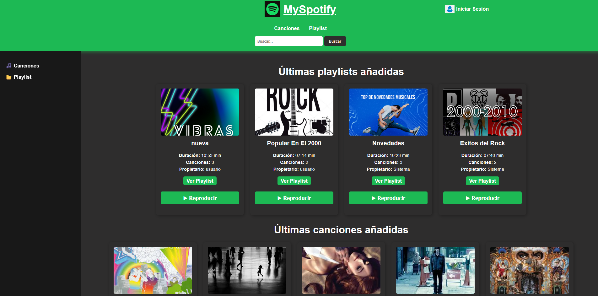
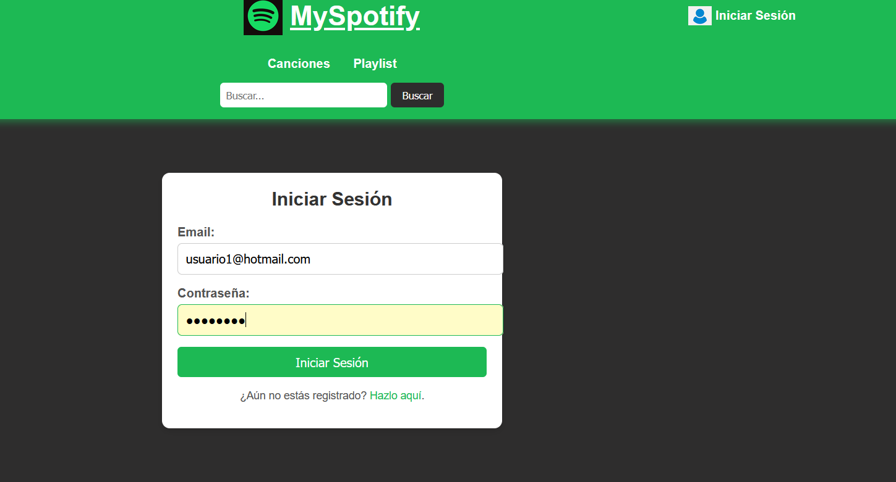
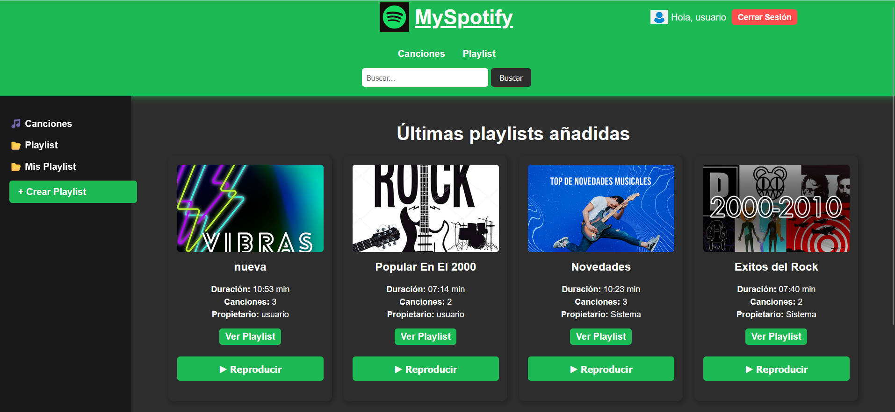
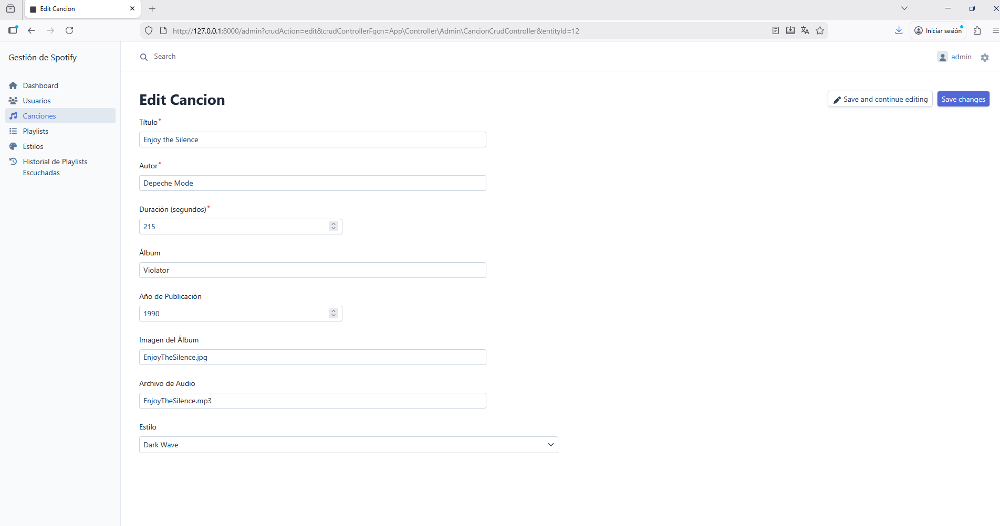
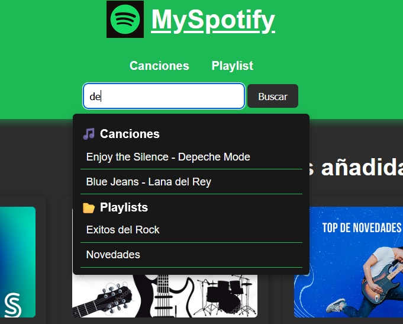
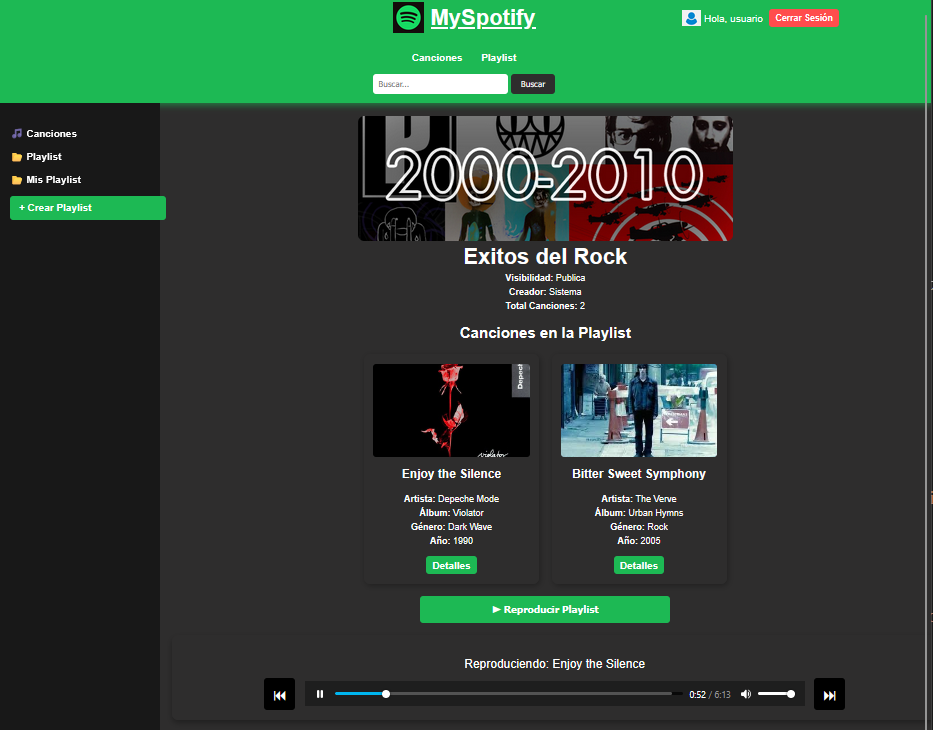
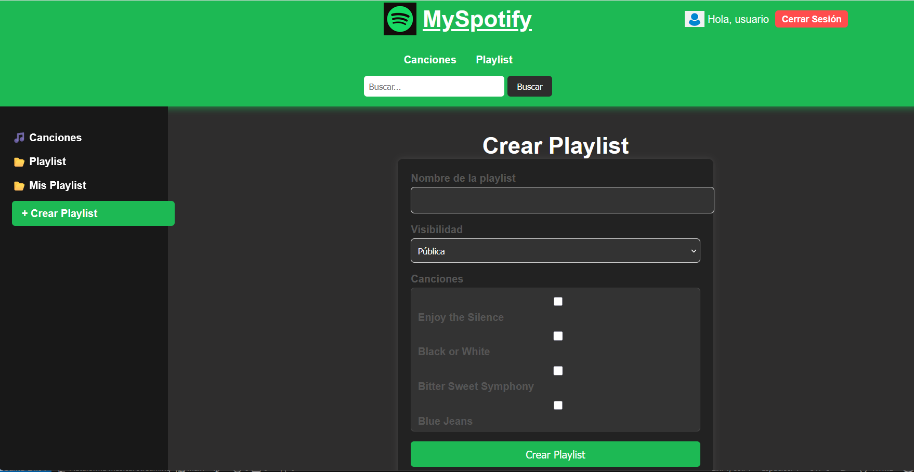
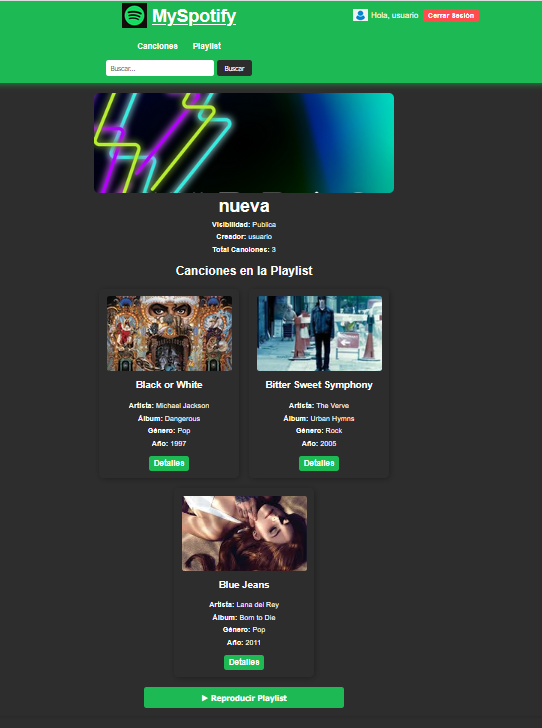
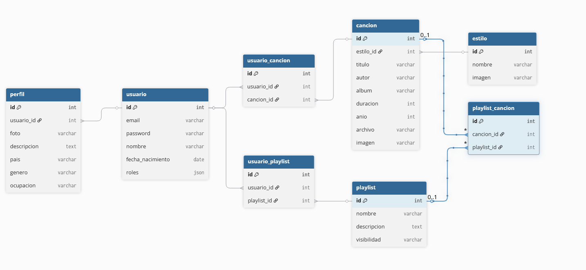

Plataforma de Streaming Musical — Demo
Esta demo muestra una vista rápida del funcionamiento de la plataforma de streaming musical desarrollada con Symfony 6,
MySQL, Docker y EasyAdmin. Incluye capturas reales de la navegación pública, autenticación, gestión de playlists,
búsqueda en tiempo real, reproducción de música y panel de administración.
Capturas
Pantalla principal (sin login)

Pantalla de login

Pantalla principal (usuario logeado)

Panel de administración — Crear canción

Buscador en tiempo real

Reproducción desde playlist

Crear playlist

Información de una playlist

Diagrama entidad–relación

Funcionalidades mostradas
- Navegación pública con reproducción de música sin necesidad de registro.
- Autenticación con contraseña cifrada.
- Funcionalidades adicionales tras el login: gestión y visualización de playlists.
- Reproductor integrado con reproducción desde playlists.
- Creación y gestión de playlists personalizadas.
- Buscador en tiempo real de canciones, playlists y estilos.
- Panel de administración con creación y gestión de canciones.
- Modelo de datos relacional reflejado en el diagrama ER.
Tecnologías utilizadas
- Symfony 6
- PHP 8
- Doctrine ORM
- EasyAdmin
- MySQL
- Docker
- Twig
- JavaScript
- HTML5 / CSS3